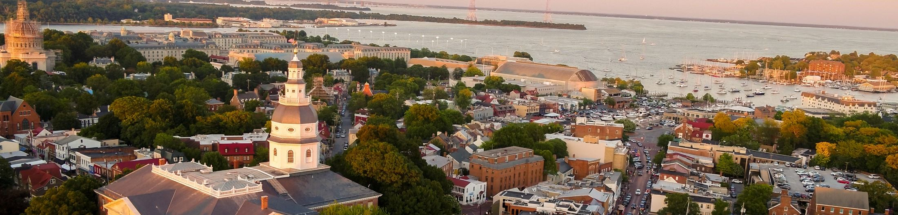
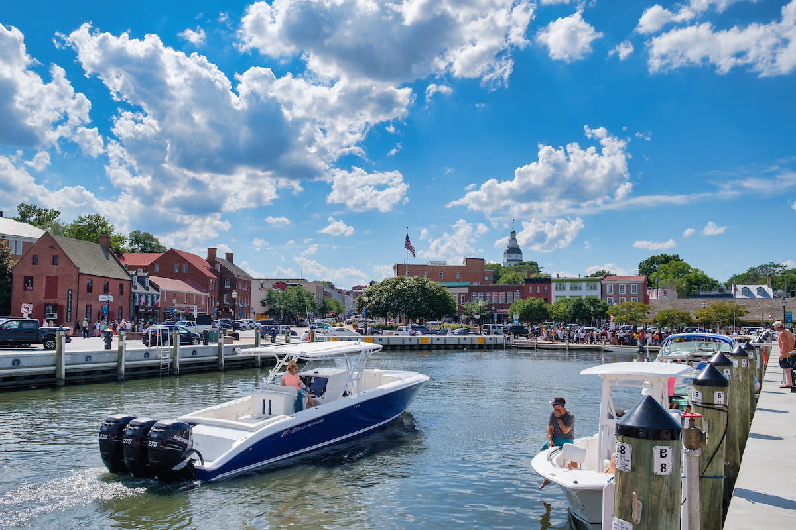

Historic Annapolis – Maryland's Capitol Dome Overlooking the Naval Academy and Chesapeake Waters
Annapolis: The Capital City of Maryland at a Glance
Annapolis, Maryland's state capital, is one of those places that feels small at first, but the more time you spend there, the more you realize how much is packed into it. It sits right where the Severn River meets the Chesapeake Bay, so the whole city has this laid–back waterfront vibe that you don't really get anywhere else. It's also home to the United States Naval Academy, which gives the city a unique mix of history and tradition. Between that and the Maryland State House, the oldest state capitol still in use, you're constantly reminded that Annapolis has been important for a long time (Maryland State House, 2025).
One of the biggest reasons people love coming here is the water. Annapolis is known as one of the top boating spots on the East Coast, and honestly, it lives up to the hype. The marinas are always busy, and you'll see everything from small sailboats to massive yachts cruising around. If you're into seafood, this is basically paradise. Fresh crabs, oysters, rockfish, you name it, it's probably on a menu somewhere downtown.
The weather is pretty mild most of the year. Summers are warm and perfect for being out on the water, while spring and fall are ideal for walking around the historic district or grabbing food by the harbor. Winters can get chilly, but the city still looks really pretty, especially around the holidays. Plus, with schools like St. John's College right in town, there's always a mix of students, locals, and visitors hanging out in the same spots.
Getting to Annapolis is pretty simple. It's about 30–40 minutes from both Baltimore and Washington, D.C., so most people just drive in using Route 50 or I–97. If you're flying, BWI Airport is the closest, and from there it's an easy ride into the city.
People visit Annapolis for all kinds of reasons, its history, the waterfront, the food, the festivals, or just the overall atmosphere. It's the kind of place where you can spend the day exploring museums and old buildings, then end up watching the sunset over the bay with a plate of steamed crabs. It's charming without trying too hard, and that's what makes it worth the trip.

City Dock - The historic heart of Annapolis - connects with the waterways of the Chesapeake Bay
Annapolis City Profile:
- Population: 40,689
- Year incorporated: 1708
- Region of Maryland where it is located: Central Region (Anne Arundel County)
- Classification: Urban
- Average salary compared to the rest of Maryland: $79,000 ($5368 higher than the Maryland average salary of $73,632)